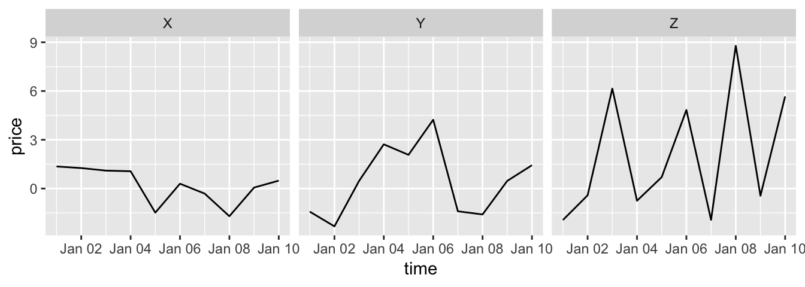

There are two functions from the tidyr package (another member of the tidyverse) that you can use to change between wide and long data: gather and spread. Here is a description of these two functions:
gather: Take several columns and gather them into two columns, one with the former column names, and one with the former cell values.spread: Take two columns and spread them into multiple columns. Column names for the new columns will come from one of the two original columns, while cell values will come from the other of the original columns.The following examples are from tidyr help files and show the effects of gathering and spreading a dataset.
Here is some simulated wide data:
wide_stocks[1:3, ]## time X Y Z
## 1 2009-01-01 1.356955 -1.4220383 -1.9378520
## 2 2009-01-02 1.258732 -2.3284751 -0.4195935
## 3 2009-01-03 1.102894 0.4697818 6.1476633In the wide_stocks dataset, there are separate columns for three different stocks (X, Y, and Z). Each cell gives the value for a certain stock on a certain day. This data isn’t “tidy”, because the identify of the stock (X, Y, or Z) is a variable, and you’ll probably want to include it as a variable in modeling.
wide_stocks[1:3, ]## time X Y Z
## 1 2009-01-01 1.356955 -1.4220383 -1.9378520
## 2 2009-01-02 1.258732 -2.3284751 -0.4195935
## 3 2009-01-03 1.102894 0.4697818 6.1476633If you want to convert the dataframe to have all stock values in a single column, you can use gather to convert wide data to long data:
long_stocks <- gather(wide_stocks, key = stock,
value = price, -time)
long_stocks[1:5, ]## time stock price
## 1 2009-01-01 X 1.356955
## 2 2009-01-02 X 1.258732
## 3 2009-01-03 X 1.102894
## 4 2009-01-04 X 1.063256
## 5 2009-01-05 X -1.484242In this “long” dataframe, there is now one column that gives the identify of the stock (stock) and another column that gives the price of that stock that day (price):
long_stocks[1:5, ]## time stock price
## 1 2009-01-01 X 1.356955
## 2 2009-01-02 X 1.258732
## 3 2009-01-03 X 1.102894
## 4 2009-01-04 X 1.063256
## 5 2009-01-05 X -1.484242The format for a gather call is:
## Generic code
new_df <- gather(old_df,
key = [name of column with old column names],
value = [name of column with cell values],
- [name of column(s) you want to
exclude from gather])Notice how easy it is, now that the data is gathered, to use stock for aesthetics of faceting in a ggplot2 call:
ggplot(long_stocks, aes(x = time, y = price)) +
geom_line() +
facet_grid(. ~ stock)
If you have data in a “long” format and would like to spread it out, you can use spread to do that:
stocks <- spread(long_stocks, key = stock, value = price)
stocks[1:5, ]## time X Y Z
## 1 2009-01-01 1.356955 -1.4220383 -1.9378520
## 2 2009-01-02 1.258732 -2.3284751 -0.4195935
## 3 2009-01-03 1.102894 0.4697818 6.1476633
## 4 2009-01-04 1.063256 2.7205359 -0.7516471
## 5 2009-01-05 -1.484242 2.0730321 0.6993561Notice that this reverses the action of gather.
“Spread” data is typically not tidy, so you often won’t want to use spread when you are preparing data for analysis. However, spread can be very helpful in creating clean tables for final reports and presentations.
For example, if you wanted to create a table with means and standard deviations for each of the three stocks, you could use spread to rearrange the final summary to create an attractive table.
long_stocks %>%
group_by(stock) %>%
summarize(N = n(), mean = mean(price), sd = sd(price))## # A tibble: 3 x 4
## stock N mean sd
## <chr> <int> <dbl> <dbl>
## 1 X 10 0.212 1.10
## 2 Y 10 0.465 2.16
## 3 Z 10 2.06 3.90Three important notes:
key and value arguments, you are just providing column names for the two columns that everything’s gathered into.date in the example), use - to exclude it in the gather call.The following examples are from tidyr help files and show the effects of gathering and spreading a dataset.